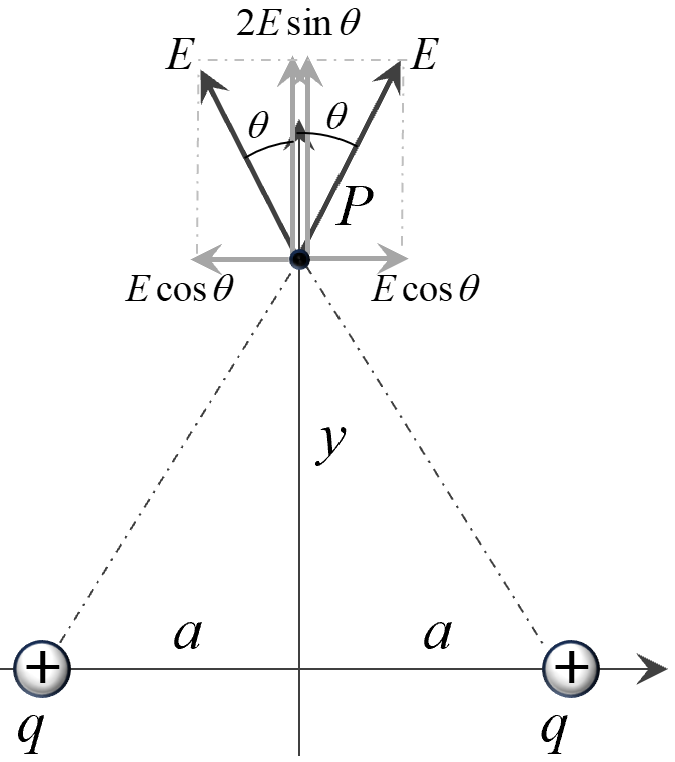
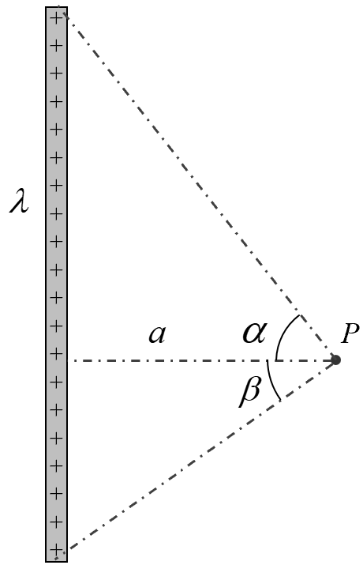

The concept of charge is fundamental in understanding the
interactions of particles in the realm of electromagnetism. Much like mass is an
intrinsic property that causes particles to experience gravitational forces, charge
is a fundamental property that leads particles to experience electric and magnetic
forces. The SI unit of charge is the coulomb (C). The charges are only known to
occur on matterial objects, having finite mass.
Charges come in two distinct types, often referred to as polarity:
positive and negative. Particles with like charges repel each other, while those
with unlike charges attract.
The smallest stable quantity of charge known is the electronic
charge, denoted as \( e \), which has a magnitude of approximately \(
1.602 \times 10^{-19} \) coulombs. This unit is the charge carried by a single
proton, with electrons carrying a charge of the same magnitude but opposite
polarity. All observable charges are
integral multiples of this elementary charge.
Some fundamental properties of charge are enlisted below:
Additive Property of Charge: The
total charge of a system is the algebraic sum of all individual charges
within it. This means that charges can be added together like real numbers,
taking into account their signs.
Conservation of Charge: Charge is a
conserved quantity; during any physical process, the total charge remains
constant.
Quantisation of Charge: Charges
exist only in discrete amounts that are integral multiples of the elementary
charge \( e \). This quantization is significant in microscopic systems but
is often negligible in macroscopic systems involving large amounts of
charge, where charge can be treated as continuous for practical
calculations.
When charges are distributed over a region of space, we describe this distribution
using charge density. For linear distributions, we define a linear
charge density \( \lambda \) as the charge per unit length. For surface
distributions, the surface charge density \( \sigma \) represents the charge per
unit area. In the case of volumetric distributions, the volume charge density \(
\rho \) denotes the charge per unit volume. These densities help us analyze electric
fields generated by continuous charge distributions.
Following are a few simple and practicle methods of charging an object:
Charging through Direct Contact:
One common method is through direct contact, where a charged object
touches
a neutral one, transferring some of its charge. For example, rubbing a
glass
rod with silk transfers electrons from the glass to the silk, leaving
the
rod positively charged.
Charging through Induction:
Induction involves bringing a charged object near a conductor, causing a
redistribution of charges within the conductor without direct contact.
This
phenomenon leverages the mobility of charges in conductors to induce a
net
charge in a specific region.
Diagram: Charging by
Induction.
The force between two point charges is described by Coulomb's
Law. This fundamental principle states that the magnitude of the
electrostatic force \( F \) between two stationary point charges is directly
proportional to the product of the absolute values of the charges and inversely
proportional to the square of the distance \( r \) between them. Mathematically,
it is expressed as:
\(\qquad F = k \dfrac{|q_1 q_2|}{r^2}\)
where \( k \) is Coulomb's constant (\( k = \dfrac{1}{4\pi\varepsilon_0} \)),
and
\( \varepsilon_0 \) is the vacuum permittivity. The scalar form of Coulomb's Law
provides the magnitude of the force, while the direction is along the line
connecting the two charges, being repulsive if the charges are of like signs and
attractive if they are of opposite signs.
Diagram: Coulomb's Law
between Two Point Charges.
Diagram: Vector Form of
Coulomb's Law between Two Point Charges.
In vector form, Coulomb's Law incorporates both magnitude and direction:
where \( \hat{r} \) is the unit vector pointing from one charge to the other.
Considering position vectors \( \vec{r}_1 \) and \( \vec{r}_2 \) for charges \(
q_1 \) and \( q_2 \) respectively, the force on \( q_2 \) due to \( q_1 \) is:
The medium between the charges affects the force through its permittivity \(
\varepsilon \). In a medium other than vacuum, \( \varepsilon \) replaces \(
\varepsilon_0 \) in the formula, changing the magnitude of the force. This
effect will be explored in detail in the chapter on dielectrics.
An important principle in electrostatics is the principle of
superposition of forces. This principle states that the total force
acting on a charge due to multiple other charges is the vector sum of the
individual forces exerted by each charge. Experimentally, it has been observed
that when a charge \( q_0 \) is placed in the presence of several other charges
\( q_1, q_2, \ldots \), the force exerted by each charge on \( q_0 \) remains
unaffected by the presence of other charges in the surrounding. Therefore, the
net force on \( q_0 \) is obtained by adding up all these individual forces
vectorially.
Diagram: Principle of
Superposition of Forces.
In other words, the principle of superposition states that the total force
\(\vec{F}_{\text{net}}\) acting on a charge is the vector sum of all individual
forces \(\vec{F}_1, \vec{F}_2, \ldots, \vec{F}_n\) exerted by each surrounding
charge. Mathematically, this is expressed as:
\(\qquad\vec{F}_{\text{net on }q_0} = \vec{F}_{\text{due to 1}}+
\vec{F}_{\text{due to 2}}+\vec{F}_{\text{due to 3}}+...\).
The electric field is a property of a point in space, determined by the influence of
charges in its surroundings. For example, if a 2 C charge placed at point P
experiences a force of 10 N along the x-axis due to nearby charges, replacing it
with a 4 C charge would result in a force of 20 N in the same direction. This
demonstrates that any charge placed at point P will experience a force of 5 N/C per
unit charge. This value of 5 N/C is the electric field at point P, which is
independent of the specific charge placed at P but depends entirely on the charges
distributed around P.
Mathematically, if a charge \( q \) is placed at a point in an electric field and
experiences a net force \( \vec{F} \), the electric field strength at that point is
given by:
\(\qquad \vec{E} = \dfrac{\vec{F}}{q}\)
Here, \( q \) is the test charge. For accurate measurement of the electric field,
the test charge \( q_0 \) must be small enough to avoid altering the charge
distribution of the source charges.
The electric field is a vector quantity, meaning it has both magnitude and
direction. Its SI unit is Newton per Coulomb (N/C). The direction of the electric
field is radially outward from a positive charge and radially inward toward a
negative charge.
Using the principle of superposition of electrostatic forces, the resultant electric
field due to multiple charges can be calculated as:
Below are detailed examples that demonstrate the calculation of electric fields
using the principle of superposition for different charge configurations:
Electric Field Due to a Point Charge
Consider a point P at a distance \( r \) from a point charge \( Q \).
The electric field at point P is calculated using Coulomb’s law. The
magnitude of the electric field \( E \) is given by:
\(\qquad
E = \dfrac{1}{4\pi \varepsilon_0} \dfrac{|Q|}{r^2}
\)
Here, \( \varepsilon_0 \) is the permittivity of free space. The
direction of the electric field is radially outward from \( Q \) if \( Q
\) is positive and radially inward if \( Q \) is negative.
In vector form, if \( \vec{r} \) is the position vector from \( Q \) to
point P, the electric field is:
Consider two charges, \( Q_1 \) and \( Q_2 \), of the same polarity
placed on the x-axis at positions \( x = -a \) and \( x = +a \),
respectively. Let us calculate the electric field at the midpoint of the
line joining the charges (point P at \( x = 0 \)).
If \( Q_1 = Q_2 \), the net electric field at P is zero, as the fields
cancel each other.
Diagram: Electric
Field Along Axis Due to Two Charges.
Electric Field Due to Two Charges Along Perpendicular
Bisector
Consider two equal charges \( Q \) located at \( (-a, 0) \) and \( (+a,
0) \) on the \(x\)-axis. Let us calculate the electric field at a point
P on
the perpendicular bisector at \( (0, y) \).
The distance of point P from each charge is:
\(\qquad
r = \sqrt{a^2 + y^2}
\)
The magnitude of the electric field due to each charge at P is:
\(\qquad
E = \dfrac{1}{4\pi \varepsilon_0} \dfrac{Q}{r^2}
\)
The electric fields due to the two charges are not aligned along the
same direction or line, so their algebraic sum cannot be directly
computed. Instead, the net electric field must be determined by
performing a vector sum. To achieve this, each electric field vector is
resolved into its components along the x and y axes. This is shown in
diagram below:
Diagram: Electric
Field Along Perpendicular Bisector.

Diagram: Electric
Field resolved along \(x\) and \(y\) axes.
The x-components of the electric fields cancel out because they are
equal in magnitude but opposite in direction. The y-components, however,
add up because they are aligned in the same direction. Thus, the net
electric field at P is entirely along the y-direction and is calculated
as the sum of the y-components of the individual fields.
Electric Field Lines are a visual representation of the electric
field in a region of space. They illustrate the direction of the electric field at
various points and the relative strength of the field, indicating the force a
positive test charge would experience at any given location. This is shown in
diagram below:
Diagram: Electric field line
To construct electric field lines, the direction of the electric field at multiple
points in a region is first represented by small arrows, each pointing in the
direction of the electric field. Connecting these arrows forms continuous lines,
known as electric field lines, which provide a clear depiction of the field's
behavior. The following diagram demonstrates this concept with examples:
Due to positive charge
Due to negative charge
Diagram: Electric field lines
generated by a point charge.
The two diagrams below represent the electric field lines drawn in a similar way for
two point charges with same and opposite polarity:
Diagram: Electric field lines
due to two charges of same polarity.
Diagram: Electric field lines
due to two charges of opposite polarity.
The following list provides fundamental properties of these electric field lines:
Origin and Termination:
Electric field lines always originate from positive charges and
terminate on negative charges or extend to infinity. For a positive
charge, the lines radiate outward, while for a negative charge, they
curve inward.
Tangent Direction:
At any point, the tangent to an electric field line indicates the
direction of the electric field at that point.
Diagram: Tangent to
Electric Field Lines Indicating Direction.
Thus, the electric field lines in absence of charges can not make a
sharp turn. As, at the position of sharp turn the direction of electric
field will become undefined.
No Intersection:
Two electric field lines can never intersect. If they did, it would
imply two different directions for the electric field at a single point,
which is not possible.
Density Indicates Field Strength:
The field's strength at any point is proportional to the density of the
electric field lines in that region. Higher density indicates a stronger
field, while lower density indicates a weaker field.
]
Following are a few standard charge distributions and the results of electric
field at various points due to such charge distributions.
Due to Uniformly Charged Ring
A uniformly charged ring exhibits unique electric field properties,
depending on the location of the observation point. Below, we discuss
two key scenarios: the electric field at the center of the ring and the
electric field at a point along its axis.
1. Electric Field at the Center of the Ring:
At the center of a uniformly charged ring, the electric field is zero
due to symmetry. Consider a small segment \( AB \) of the ring and its
opposite segment \( CD \). The electric field produced by \( AB \) at
the center is canceled out by the field produced by \( CD \), as shown
in the diagram below. This cancellation occurs for all such opposite
pairs, resulting in a net electric field strength of zero at the center.
Diagram: A Uniformly
Charged Ring.
Diagram: Electric
Field at the Center of a Uniformly Charged Ring.
2. Electric Field at a Point on the Axis:
To calculate the electric field at a point \( P \) along the axis of the
ring (at a distance \( x \) from its center), consider the following
setup:
The ring has a total charge \( Q \) uniformly distributed over its
circumference.
Its radius is \( R \), and the linear charge density is \( \lambda =
\dfrac{Q}{2\pi R} \).
This is shown in the following diagram:
Diagram: A Point
Along the Axis of a Uniformly Charged Ring.
Diagram: Electric
Field at a Point Along the Axis of a Uniformly Charged Ring.
A small segment of length \( dl \) on the ring carries a charge \( dq
\), given by:
The electric field \( dE \) at point \( P \) due to this small charge
segment is:
\(\qquad
dE = \dfrac{1}{4\pi \varepsilon_0} \dfrac{dq}{R^2 + x^2}
\)
The vertical component of \( dE \), \( dE \sin \alpha \), is canceled by
the field due to the opposite segment of the ring. The horizontal
components \( dE \cos \alpha \) add up along the axis. Integrating these
components over the entire ring yields the total electric field at \( P
\):
The direction of this electric field is along the axis of the ring. The
field is maximum at \( x = R / \sqrt{2} \).
Due to Uniformly Charged Arc
Consider a circular arc of radius \( R \), uniformly charged with a
total charge \( Q \), which subtends an angle \( \theta \) at its center
\( C \). The task is to calculate the electric field strength at \( C \)
due to the charge distribution along the arc.
Diagram: A Uniformly
Charged Circular Arc.
Diagram: Electric
Field Due to a Uniformly Charged Circular Arc.
To compute the electric field at the center, consider a small elemental
segment of the arc of angular width \( d\phi \) at an angle \( \phi \)
from the angle bisector (x-axis). The length of this elemental segment
is:
The component of \( dE \) perpendicular to the angle bisector cancels
out due to symmetry when integrated over the entire arc. The component
along the angle bisector (x-axis) contributes to the net electric field
and is given by:
Substituting this result, the net electric field at \( C \) becomes:
\(\qquad
E = \dfrac{1}{4\pi \varepsilon_0} \dfrac{2Q}{R^2 \theta}
\sin\dfrac{\theta}{2}
\)
The direction of the electric field is along the angle bisector
(x-axis).
Due to Uniformly Charged Rod
We derive the electric field at a general point \(P\) due to a uniformly
charged rod. This includes results for a finite rod at a point located
at a perpendicular distance from the rod and the special case of an
infinite rod.
Finite Rod
Consider a uniformly charged finite rod \(AB\) of length \(L\), with a
uniform linear charge density \( \lambda \). Let the point \(P\) be at a
perpendicular distance \(a\) from the rod. The ends of the rod subtend
angles \( \alpha \) and \( \beta \) at \(P\), as shown in the diagram.

Diagram: Finite Rod
with Angles \( \alpha \) and \( \beta \).
Diagram: Electric
field generated by an element of rod.
To find the electric field, consider an infinitesimal element of length
\(dx\) at a distance \(x\) from the perpendicular line through \(P\).
This is shown in the diagram above. The charge on this element is:
\(\qquad
dq = \lambda \, dx
\)
The electric field \(dE\) at \(P\) due to this element is:
\(\qquad
dE = \dfrac{1}{4\pi\varepsilon_0} \dfrac{dq}{r^2}
\)
Resolving \(dE\) into components:
\(dE_x = dE \cos\theta\)
\(dE_y = dE \sin\theta\)
Substituting for \(dE\) and using \( \cos\theta = \dfrac{a}{r} \) and \(
\sin\theta = \dfrac{x}{r} \), we get:
Now, integrate each component over the limits of \( \theta \), from \(
-\beta \) to \( \alpha \), where \( \alpha \) and \( \beta \) are the
angles subtended by the ends of the rod at \(P\):
The components \( E_x \) and \( E_y \) can be combined vectorially to
find the net electric field at point \( P \). This is particularly
useful when analyzing the direction and magnitude of the resulting
field.
For the special case of an infinite rod, the angles subtended by
the ends of the rod become \( \alpha = \beta = \dfrac{\pi}{2} \), since
the rod effectively extends indefinitely in both directions.
Substituting these values simplifies the expressions for \( E_x \) and
\( E_y \), leading to the final result for the electric field due to an
infinite line of charge, given as:
\(\qquad
E = \dfrac{\lambda}{2\pi\varepsilon_0 a}
\)
The field is radial for an infinite rod, directed outward for \( \lambda
> 0 \) and inward for \( \lambda < 0 \).
Due to Uniformly Charged Disc
Consider a uniformly charged disc of radius \( R \), having a surface
charge density \( \sigma \) (charge per unit area). We aim to calculate
the electric field at a point \( P \), located at a distance \( x \)
from the center of the disc along its axis. The setup is illustrated in
the diagram below.
Diagram: Uniformly
Charged Disc and the Point of Interest \( P \) on its Axis.
Diagram: Considered
element on disc causing electric field \(d\vec{E}\) on axis.
To compute the electric field at \( P \), consider an infinitesimal ring
element of radius \( r \) and thickness \( dr \) within the disc. The
charge on this ring is:
\(\qquad
dq = \sigma \cdot (2\pi r \, dr)
\)
The electric field due to this infinitesimal ring at point \( P \) has
only the axial. The
infinitesimal electric field along the axis is given by:
\(\qquad
dE = \dfrac{1}{4\pi\varepsilon_0} \dfrac{dqx}{(r^2
+ x^2)^{3/2}}
\)
Substituting \( dq \), we get:
\(\qquad
dE = \dfrac{\sigma \cdot 2\pi r \, dr}{4\pi\varepsilon_0} \dfrac{x}{(r^2
+ x^2)^{3/2}}
\)
The total electric field \( E \) along the axis is obtained by
integrating \( dE \) over the entire disc, i.e., from \( r = 0 \) to \(
r = R \):
\(\qquad
E = \displaystyle\int_0^R \dfrac{\sigma x r \, dr}{2\varepsilon_0 (r^2 +
x^2)^{3/2}}
\)
Substituting \( u = r^2 + x^2 \), \( du = 2r \, dr \), and updating the
limits of integration, we have:
\(\qquad
E = \dfrac{\sigma x}{2\varepsilon_0} \displaystyle\int_{x^2}^{x^2 + R^2}
u^{-3/2} \,
du
\)
The integral \( \int u^{-3/2} \, du = -2u^{-1/2} \), so:
The direction of the electric field is along the axis of the disc,
pointing away from the disc if \( \sigma > 0 \) (positive surface charge
density), and toward the disc if \( \sigma < 0 \) (negative surface
charge density).
Due to Spherical Charge Distribution
The electric field due to a spherical charge distribution depends on
whether the sphere is a uniformly charged shell or a solid sphere.
Below, we analyze the electric field in both cases:
1. Uniformly Charged Spherical Shell:
A uniformly charged spherical shell exhibits unique electric field
behavior based on the position of the observation point:
For points outside the shell (\(x \ge R\)):
By symmetry, the electric field behaves as if the entire charge \( Q
\) is concentrated at the center of the shell. The electric field
strength at a point at distance \( x \) from the center is:
The electric field strength is zero everywhere inside the shell due
to symmetry. This result can be formally derived using Gauss's law
(to be discussed in further chapters).
Diagram: Inside point
\(P_1\) and outside point \(P_2\) of a spherical charged shell.
Diagram: Electric
Field Due to a Uniformly Charged Spherical Shell.
2. Uniformly Charged Solid Sphere:
A uniformly charged solid sphere exhibits different electric field
characteristics for points inside and outside the sphere:
For points outside the sphere (\(x \ge R\)):
Similar to the spherical shell, the entire charge \( Q \) can be
treated as concentrated at the center. The electric field strength
is:
Following diagram represents a point inside a uniformly charged
solid sphere:
Diagram: Inside
point
\(P\) of a charged solid sphere.
The electric field strength at a point inside a uniformly charged
sphere depends only on the charge enclosed within a smaller sphere
of radius \( x \), centered at the same point as the larger sphere.
This result follows from symmetry and the fact that the electric
field inside a uniformly charged spherical shell is zero, as
discussed in the context of Gauss's Law.
For an interior point, the sphere can be visualized as consisting of
two regions:
The inner sphere: A smaller sphere of radius \(
x \), centered at the same point as the larger sphere, which
contributes to the electric field at the point of interest.
The outer shell: The remaining portion of the
sphere, which is a spherical shell with an inner radius \( x \)
and an outer radius \( R \), does not contribute to the electric
field at any point inside it. This is a result of symmetry and
the shell theorem.
To calculate the electric field at a point inside the sphere at a
distance \( x \) from its center, we first determine the total
charge enclosed within the inner sphere of radius \( x \). The total
charge of the sphere is distributed uniformly, so the charge
enclosed within the smaller sphere is proportional to its volume.
Using the volume formula for spheres, we find:
\[
q_\text{encl} = \dfrac{\text{Volume of inner sphere}}
{\text{Volume of entire sphere}} \cdot Q
\]
Substituting the volume formula for spheres (\( \text{Volume} =
\frac{4}{3} \pi r^3 \)), the enclosed charge is:
\[
E = \dfrac{1}{4 \pi \varepsilon_0} \dfrac{\frac{Q x^3}{R^3}}{x^2}
\]
Simplifying further:
\[
E = \dfrac{1}{4 \pi \varepsilon_0} \dfrac{Q x}{R^3}
\]
Thus, the electric field at any interior point is directly
proportional to the distance \( x \) from the center of the sphere
and is given by:
\[
E = \dfrac{1}{4 \pi \varepsilon_0} \dfrac{Q x}{R^3}
\]
This linear dependence on \( x \) demonstrates that the electric
field increases linearly with distance from the center for points
inside the sphere, reaching its maximum value at the surface.
If the volume charge density \( \rho \) of the sphere is known, the
total charge \( Q \) can be expressed as:
\(\qquad
Q = \rho \cdot \dfrac{4}{3} \pi R^3
\)
Substituting this into the expression for \( E_\text{in} \), we get:
The variation of the electric field as a function of distance from the
center of the sphere is shown in the graph below. The field increases
linearly within the sphere and decreases inversely with the square of
the distance outside the sphere.
Graph: Variation of
Electric Field with Distance from the Center of a Uniformly
Charged Sphere.